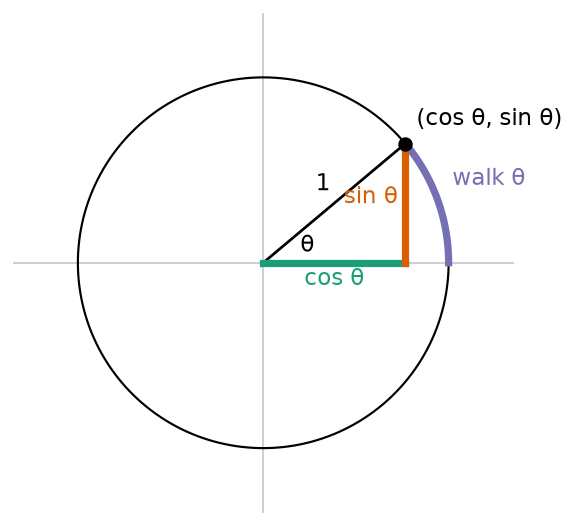
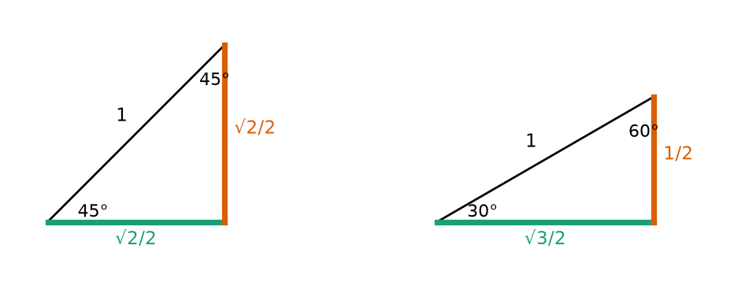
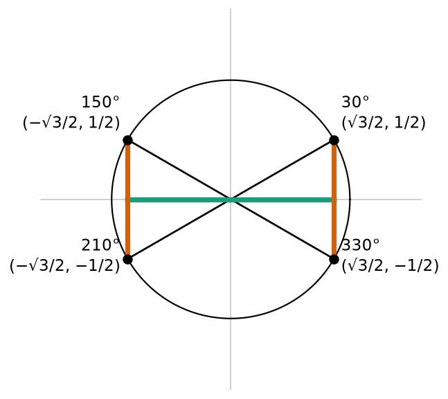

Trigonometry 1: a point on a circle
Radians, sine and cosine, and the other three
Cover the right-hand column. Answer each question in your head, then look.
An angle is a walk
| A circle has radius 1. Walk once round it. How far did you go? | 2π, its circumference. |
| Half way round? | π. |
| How many degrees is half a turn? | 180°. |
| So what is an angle? | How far you walked round the circle. Degrees count 360 to a turn; radians count the distance itself, 2π to a turn. |
| A quarter turn, in radians? | 2π ÷ 4 = π/2. |
| π/3, in degrees? | π is 180°, so π/3 is 60°. |
| 135°, in radians? | 135 is three quarters of 180, so 3π/4. |
π radians = 180°. To get radians, multiply degrees by π/180; to get degrees, multiply radians by 180/π.
Where the walk ends
Start at (1, 0) and walk θ round the circle, anticlockwise.

| Where are you now? | At some point (x, y) on the circle. |
| What is x called? | cos θ: how far across. |
| And y? | sin θ: how far up. |
| What is tan θ? | sin θ ÷ cos θ: up over across, the slope of your radius. |
The point at angle θ on the circle of radius 1 is (cos θ, sin θ).
A bigger circle is the same picture, scaled. That is all a right triangle is.
| A 4 m ladder leans at 60° to the ground. Which circle is it the radius of? | The circle of radius 4. |
| How high does it reach? | 4 times as high as on the unit circle: 4 sin 60°. |
| A ramp 2 m long rises 1 m. Which angle has sin θ = 1/2? | We need a few values we know by heart. Next section. |
Two triangles worth knowing

| Cut a square along its diagonal. The angles? | 45°, 45°, 90°. |
| Make the diagonal 1. How long are the two equal sides, x? | x² + x² = 1, so x = 1/√2 = √2/2. |
| So cos 45° and sin 45°? | Both √2/2. |
| Cut an equilateral triangle with sides 1 in half. The angles? | 30°, 60°, 90°. |
| The short side? | Half of 1: 1/2. That’s sin 30°. |
| The long side? | √(1 − 1/4) = √3/2. That’s cos 30°. |
| Back to the ramp: the angle? | sin θ = 1/2, so θ = 30°. |
| And the ladder: 4 sin 60°? | Turn the 30-60-90 triangle round: sin 60° = √3/2. The ladder reaches 4 · √3/2 = 2√3 ≈ 3.46 m. |
Same reference angle, same numbers

| Where is 150°? | 30° short of half a turn: 30° mirrored across the up-down axis. |
| So sin 150°? | The same height as 30°: 1/2. |
| And cos 150°? | The same distance across, but to the left: −√3/2. |
| What is 30° called here? | The reference angle: the angle between your radius and the nearest x-axis. |
| The reference angle of 225°? | 225 − 180 = 45°. |
| Of 300°? | 360 − 300 = 60°. |
An angle has the same sin and cos as its reference angle, except for the sign. The quadrant sets the sign: across is negative on the left, up is negative below.
Someone writes sin 210° = 1/2. Find the mistake.
Decide before you read on.
210° is 30° past half a turn, below the axis. Below means up is negative: sin 210° = −1/2.
The other three
| sec θ? | 1 ÷ cos θ. |
| csc θ? | 1 ÷ sin θ. |
| cot θ? | 1 ÷ tan θ, which is cos θ ÷ sin θ. |
| sec 60°? | cos 60° = 1/2, so sec 60° = 2. |
| tan 90°? | At 90° you are at (0, 1). cos 90° = 0, and we can’t divide by 0. No value. |
The names cross over: sec goes with cos, csc with sin. If that won’t stick, remember only “one over”.
Exercises
Click Answer under an exercise to see it.
Turn 270° into radians, and 2π/3 into degrees.
Answer
3π/2; 120°.
Turn 135° into radians, and 5π/6 into degrees.
Answer
3π/4; 150°.
Draw the point first, then give sin 210° and cos 120°.
Answer
210° is below the axis on the left: sin 210° = −1/2. 120° is up and to the left: cos 120° = −1/2.
csc(π/4) and cot 150°.
Answer
π/4 is 45°, sin 45° = √2/2, so csc(π/4) = 2/√2 = √2. cot 150° = cos 150° ÷ sin 150° = (−√3/2) ÷ (1/2) = −√3.
The reference angles of 225° and 300°.
Answer
45° and 60°.
A 10 m ramp rises at 30°. How high does it go?
Answer
10 sin 30° = 10 · 1/2 = 5 m.
A 2 m pole leans against a wall; its top is √2 m up. At what angle does it lean?
Answer
sin θ = √2/2, so θ = 45°.